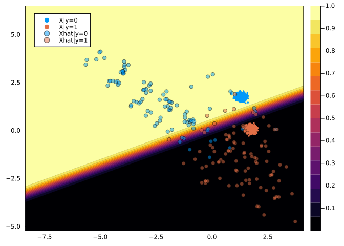

EnergySamplers
Documentation for EnergySamplers.
EnergySamplers.jl is a small and lightweight package for sampling from probability distributions using methods from energy-based modelling (EBM). Its functionality is used in other Taija packages, including JointEnergyModels.jl and CounterfactualExplanations.jl.
Extensions to Optimisers.jl
The package adds two new optimisers that are compatible with the Optimisers.jl interface:
- Stochastic Gradient Langevin Dynamics (SGLD) (Welling and Teh 2011) —
SGLD. - Improper SGLD (see, for example, Grathwohl et al. (2020)) —
ImproperSGLD.
SGLD is an efficient gradient-based Markov Chain Monte Carlo (MCMC) method that can be used in the context of EBM to draw samples from the model posterior (Murphy 2023). Formally, we can draw from $p_{\theta}(x)$ as follows
\[\begin{aligned} x_{j+1} &\leftarrow x_j - \frac{\epsilon_j^2}{2} \nabla_x \mathcal{E}_{\theta}(x_j) + \epsilon_j r_j, && j=1,...,J \end{aligned}\]
where $r_j \sim \mathcal{N}(0,I)$ is a stochastic term and the step-size $\epsilon_j$ is typically polynomially decayed (Welling and Teh 2011). To allow for faster sampling, it is common practice to choose the step-size $\epsilon_j$ and the standard deviation of $r_j$ separately. While $x_J$ is only guaranteed to distribute as $p_{\theta}(x)$ if $\epsilon \rightarrow 0$ and $J \rightarrow \infty$, the bias introduced for a small finite $\epsilon$ is negligible in practice (Murphy 2023). We denote this form of sampling as Improper SGLD.
Example: Bayesian Inferecne with SGLD
To illustrate how the custom optimisers can be used, we will go through an example adapted from this (great!) blog post by Sebastian Callh. First, let’s load some dependencies:
# External dependencies:
using Flux
using Flux: gpu
using MLDataUtils: shuffleobs, stratifiedobs, rescale!
using Plots
using Random
using RDatasets
using Statistics
# Custom optimisers:
using EnergySamplers: ImproperSGLD, SGLDNext, we load some data and prepare it for training a logistic regression model in Flux.jl:
Random.seed!(2024)
data = dataset("ISLR", "Default")
todigit(x) = x == "Yes" ? 1.0 : 0.0
data[!, :Default] = map(todigit, data[:, :Default])
data[!, :Student] = map(todigit, data[:, :Student])
target = :Default
numerics = [:Balance, :Income]
features = [:Student, :Balance, :Income]
train, test = (d -> stratifiedobs(first, d; p=0.7))(shuffleobs(data))
for feature in numerics
μ, σ = rescale!(train[!, feature]; obsdim=1)
rescale!(test[!, feature], μ, σ; obsdim=1)
end
prep_X(x) = Matrix(x)'
prep_y(y) = reshape(y, 1, :)
train_X, test_X = prep_X.((train[:, features], test[:, features]))
train_y, test_y = prep_y.((train[:, target], test[:, target]))
train_set = Flux.DataLoader((train_X, train_y); batchsize=100, shuffle=false)70-element DataLoader(::Tuple{LinearAlgebra.Adjoint{Float64, Matrix{Float64}}, Matrix{Float64}}, batchsize=100)
with first element:
(3×100 Matrix{Float64}, 1×100 Matrix{Float64},)Finally, we create a small helper function that runs the training loop for a given optimiser opt and number of steps:
function train_logreg(; steps::Int=1000, opt=Flux.Descent(2))
Random.seed!(1)
paramvec(θ) = reduce(hcat, θ)
model = Dense(length(features), 1, sigmoid)
θ = Flux.params(model)
θ₀ = paramvec(θ)
predict(x; thres=0.5) = model(x) .> thres
accuracy(x, y) = mean(predict(x) .== y)
loss(yhat, y) = Flux.binarycrossentropy(yhat, y)
avg_loss(yhat, y) = mean(loss(yhat, y))
trainloss() = avg_loss(model(train_X), train_y)
testloss() = avg_loss(model(test_X), test_y)
trainlosses = [trainloss(); zeros(steps)]
testlosses = [testloss(); zeros(steps)]
weights = [θ₀; zeros(steps, length(θ₀))]
opt_state = Flux.setup(opt, model)
for t in 1:steps
for data in train_set
input, label = data
# Calculate the gradient of the objective
# with respect to the parameters within the model:
grads = Flux.gradient(model) do m
result = m(input)
loss(result, label)
end
Flux.update!(opt_state, model, grads[1])
end
# Bookkeeping
weights[t + 1, :] = paramvec(θ)
trainlosses[t + 1] = trainloss()
testlosses[t + 1] = testloss()
end
println("Final parameters are $(paramvec(θ))")
println("Test accuracy is $(accuracy(test_X, test_y))")
return model, weights, trainlosses, testlosses
endtrain_logreg (generic function with 1 method)Now we use this function to train the model, first using SGLD and then using Improper SGLD:
results = train_logreg(; steps=100, opt=SGLD(10.0, 10.0, 0.9))
model, weights, trainlosses, testlosses = results
p1 = plot(weights; label=["Student" "Balance" "Income" "Intercept"], plot_title="SGLD")
results = train_logreg(; steps=100, opt=ImproperSGLD(2.0, 0.01))
model, weights, trainlosses, testlosses = results
p2 = plot(weights; label=["Student" "Balance" "Income" "Intercept"], plot_title="Improper SGLD")
plot(p1, p2, size=(800, 400))┌ Warning: `Flux.params(m...)` is deprecated. Use `Flux.trainable(model)` for parameter collection,
│ and the explicit `gradient(m -> loss(m, x, y), model)` for gradient computation.
└ @ Flux ~/.julia/packages/Flux/Mhg1r/src/deprecations.jl:93
┌ Warning: Layer with Float32 parameters got Float64 input.
│ The input will be converted, but any earlier layers may be very slow.
│ layer = Dense(3 => 1, σ) # 4 parameters
│ summary(x) = "3×7000 adjoint(::Matrix{Float64}) with eltype Float64"
└ @ Flux ~/.julia/packages/Flux/Mhg1r/src/layers/stateless.jl:60
Final parameters are Float32[-2.3311744 1.1305944 -1.5102222 -4.0762844]
Test accuracy is 0.9666666666666667
Final parameters are Float32[-0.6106307 2.760134 -0.031244753 -5.8856964]
Test accuracy is 0.9763333333333334Energy-Based Samplers
In the context of EBM, the optimisers can be used to sample from a model posterior. To this end, the package provides the following samples:
UnconditionalSampler— samples from the unconditional distribution $p_{\theta}(x)$ as in Grathwohl et al. (2020).ConditionalSampler— samples from the conditional distribution $p_{\theta}(x|y)$ as in Grathwohl et al. (2020).JointSampler— samples from the joint distribution $p_{\theta}(x,y)$ as in Kelly, Zemel, and Grathwohl (2021).
Example: Joint Energy-Based Model
The conditional sampler is used to draw class-conditional samples from a joint energy-based model (JEM) trained using Taija’s JointEnergyModels.jl. JEMs are explicitly trained to not only discriminate between output classes but also generate inputs. Hence, in the image below we can see that the model’s posterior conditional distributions (both over outputs and inputs) seem to approximate the true underlying distributions reasonably well: the model has learned to discriminate between the two classes (as indicated by the contours) and to generate samples from each class (as indicated by the stars).

Worked Example
Next, we will present a simple worked example involving linearly separable Gaussian blobs:
using Distributions
using MLJBase
# Data:
nobs = 2000
X, y = make_blobs(nobs; centers=2, center_box=(-2. => 2.), cluster_std=0.1)
Xmat = Float32.(permutedims(matrix(X)))
X = table(permutedims(Xmat))
batch_size = Int(round(nobs / 10))
# Distributions:
ùíüx = Normal()
ùíüy = Categorical(ones(2) ./ 2)Distributions.Categorical{Float64, Vector{Float64}}(support=Base.OneTo(2), p=[0.5, 0.5])We train a simple linear classifier to discriminate between output classes:
# Train a simple neural network on the data (classification)
Xtrain = permutedims(MLJBase.matrix(X))
ytrain = Flux.onehotbatch(y, levels(y))
train_set = zip(eachcol(Xtrain), eachcol(ytrain))
inputdim = size(first(train_set)[1], 1)
outputdim = size(first(train_set)[2], 1)
nn = Chain(Dense(inputdim, outputdim))
loss(yhat, y) = Flux.logitcrossentropy(yhat, y)
opt_state = Flux.setup(Flux.Adam(), nn)
epochs = 5
for epoch in 1:epochs
Flux.train!(nn, train_set, opt_state) do m, x, y
loss(m(x), y)
end
@info "Epoch $epoch"
println("Accuracy: ", mean(Flux.onecold(nn(Xtrain)) .== Flux.onecold(ytrain)))
end[ Info: Epoch 1
Accuracy: 0.9995
[ Info: Epoch 2
Accuracy: 0.9995
[ Info: Epoch 3
Accuracy: 0.9995
[ Info: Epoch 4
Accuracy: 0.9995
[ Info: Epoch 5
Accuracy: 0.9995Finally, we draw conditional samples from the model. Since we used a purely discriminative model for the task, the estimated posterior conditional distributions over inputs are not very good: the conditionally drawn samples (Xhat) largely lie on the right side of the decision boundary, but they are clearly not generated by the same data generating process as the training data.
using EnergySamplers: ConditionalSampler, PMC
# PMC
bs = 10
ntrans = 10
niter = 100
# Conditionally sample from first class:
smpler = ConditionalSampler(
ùíüx, ùíüy; input_size=size(Xmat)[1:(end - 1)], batch_size=bs
)
x1 = PMC(smpler, nn, ImproperSGLD(); ntransitions=ntrans, niter=niter, y=1)
# Conditionally sample from second class:
smpler = ConditionalSampler(
ùíüx, ùíüy; input_size=size(Xmat)[1:(end - 1)], batch_size=bs
)
x2 = PMC(smpler, nn, ImproperSGLD(); ntransitions=ntrans, niter=niter, y=2)
# Contour plot for predictions:
xlims = extrema(hcat(x1,x2)[1,:]) .* 1.1
ylims = extrema(hcat(x1,x2)[2,:]) .* 1.1
xrange = range(xlims[1], xlims[2], 100)
yrange = range(ylims[1], ylims[2], 100)
z = [softmax(nn([x, y])) for x in xrange, y in yrange] |> z -> reduce(hcat, z)
plt = contourf(xrange, yrange, z[1,:], lw=0.1, xlims=xlims, ylims=ylims)
# Plot samples:
scatter!(Xtrain[1, :], Xtrain[2, :], color=Int.(y.refs), group=Int.(y.refs), label=["X|y=0" "X|y=1"], ms=2, markerstrokecolor=Int.(y.refs))
scatter!(x1[1, :], x1[2, :], color=1, label="Xhat|y=0", ms=4, alpha=0.5)
scatter!(x2[1, :], x2[2, :], color=2, label="Xhat|y=1", ms=4, alpha=0.5)
plot(plt)┌ Warning: Layer with Float32 parameters got Float64 input.
│ The input will be converted, but any earlier layers may be very slow.
│ layer = Dense(2 => 2) # 6 parameters
│ summary(x) = "2-element Vector{Float64}"
└ @ Flux ~/.julia/packages/Flux/Mhg1r/src/layers/stateless.jl:60
References
Grathwohl, Will, Kuan-Chieh Wang, Joern-Henrik Jacobsen, David Duvenaud, Mohammad Norouzi, and Kevin Swersky. 2020. “Your Classifier Is Secretly an Energy Based Model and You Should Treat It Like One.” In International Conference on Learning Representations.
Kelly, Jacob, Richard Zemel, and Will Grathwohl. 2021. “Directly Training Joint Energy-Based Models for Conditional Synthesis and Calibrated Prediction of Multi-Attribute Data.” https://arxiv.org/abs/2108.04227.
Murphy, Kevin P. 2023. Probabilistic Machine Learning: Advanced Topics. MIT press.
Welling, Max, and Yee W Teh. 2011. “Bayesian Learning via Stochastic Gradient Langevin Dynamics.” In Proceedings of the 28th International Conference on Machine Learning (ICML-11), 681–88. Citeseer.